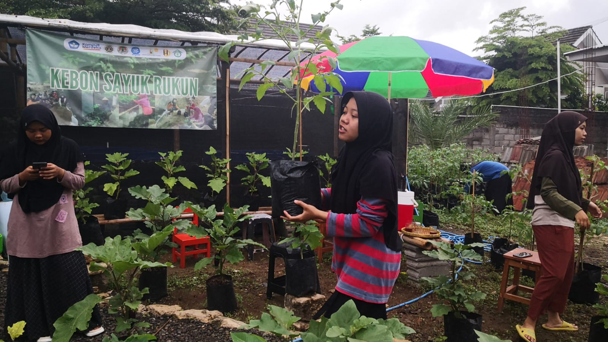
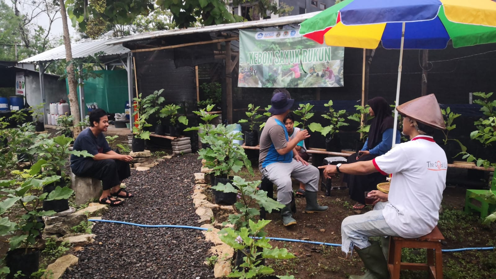
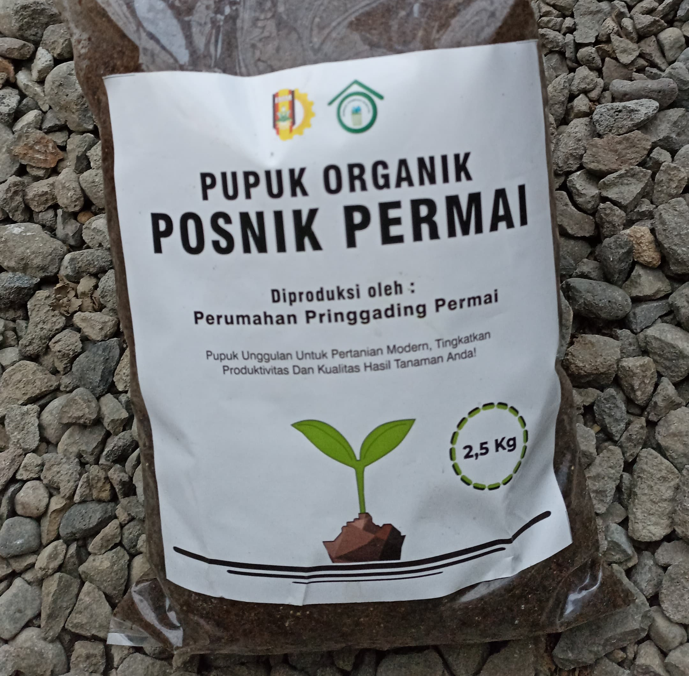

PROGRAM INTEGRATED FARMING
Program Integrated Farming adalah pendekatan holistik dalam pertanian yang menggabungkan berbagai komponen dan praktik pertanian untuk menciptakan sistem yang berkelanjutan dan efisien. Metode ini mengintegrasikan tanaman, hewan ternak, perikanan, dan bahkan energi terbarukan dalam satu kesatuan yang saling mendukung dan meningkatkan produktivitas.
HASIL PROGRAM INTEGRATED FARMING
Berikut adalah contoh dari hasil pengelolaan integrated farming yang kami lakukan. Dalam pengelolaan integrated farming, kami bisa menghasilkan beberapa pangan seperti sayur-sayuran, daging ternak yang sehat, dan ikan. Semua ini diproses menggunakan teknik yang berkelanjutan dan berkontribusi pada peningkatan kualitas lingkungan hidup.
PROSES INTEGRATED FARMING
Dalam proses ini, kami melakukan penanaman tanaman serta pembibitan ikan. Kerjasama dengan masyarakat setempat juga dilakukan untuk memastikan proses ini berjalan secara efisien dan tepat sasaran, dengan hasil yang bermanfaat bagi seluruh masyarakat.
PROGRAM PENGOLAHAN SAMPAH
Program pengolahan sampah di Perumahan Pringgading Permai merupakan inisiatif yang dirancang untuk mengelola limbah rumah tangga secara efektif dan berkelanjutan. Tujuan dari program ini adalah untuk mengurangi dampak negatif sampah terhadap lingkungan serta meningkatkan kesadaran warga terhadap pentingnya daur ulang dan pengelolaan sampah yang benar.
PROSES PENGOLAHAN SAMPAH
Berikut adalah tahapan proses pengolahan sampah yang diterapkan di perumahan ini:
1. Pemilahan Sampah di Sumber
Setiap rumah tangga diharuskan untuk memisahkan sampah organik dan anorganik. Sampah organik mencakup sisa makanan, dedaunan, dan material organik lainnya, sedangkan sampah anorganik terdiri dari plastik, kertas, dan logam.
2. Pengumpulan Sampah
Sampah yang telah dipilah dikumpulkan secara terjadwal oleh petugas kebersihan perumahan. Sampah organik dan anorganik dikumpulkan secara terpisah untuk memudahkan proses pengolahan lebih lanjut.
3. Pengolahan Sampah Organik
Sampah organik dibawa ke pusat pengolahan kompos di dalam area perumahan. Sampah tersebut diolah menjadi kompos melalui proses dekomposisi alami yang dibantu dengan mikroorganisme. Kompos yang dihasilkan digunakan sebagai pupuk untuk taman-taman dan area hijau di perumahan.
4. Pengolahan Sampah Anorganik
Sampah anorganik yang dapat didaur ulang, seperti plastik dan kertas, dipisahkan dan dikirim ke fasilitas daur ulang yang bekerja sama dengan perumahan. Sampah anorganik yang tidak dapat didaur ulang, seperti bahan berbahaya, diolah sesuai dengan regulasi yang berlaku atau dibuang ke tempat pembuangan akhir (TPA) yang ditentukan.
HASIL PENGOLAHAN SAMPAH
Dalam pengolahan ini, kami berhasil mengurangi jumlah sampah yang dibuang dan meningkatkan kesadaran masyarakat mengenai pentingnya pengelolaan sampah yang baik. Hasil dari pengolahan sampah ini dapat digunakan kembali, mengurangi kebutuhan akan bahan baru, dan mendukung upaya pelestarian lingkungan.
